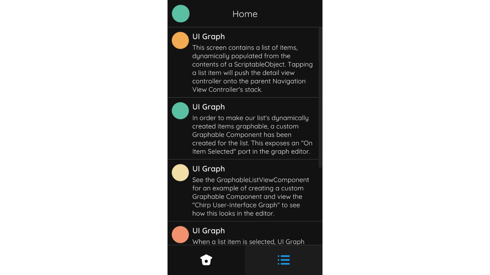

Tab Bar Canvas Controller
Introduction
The TabBarCanvasController is a container view controller designed for switching between content screens with a tab bar interface. It manages a list of content view controllers and offers transitions, in addition to a tab bar interface, for switching between the currently selected/visible view controller.
By default, the TabBarCanvasController instantiates its tab bar items upon load depending upon its list of content view controllers. You may provide a custom tab bar item prefab to be used. Additionally, tab bar items can be predefined or instantiated manually from script.
The first time a content view controller is shown, it is instantiated and embedded within the viewControllersContainer transform. Content view controllers are not unloaded until the tab bar itself is unloaded.
A Tab Bar Canvas Controller with two items – "Home" and "Options" – from the Assassin demo.
The appearance and layout of the TabBarCanvasController is highly configurable. For example, the Chirp demo uses the TabBarCanvasController to provide a mobile-like tab bar interface.
 A 'mobile-like' Tab Bar Canvas Controller from the Chirp demo.
Creation
To create a TabBarCanvasController select Create/UI Graph/UI Canvas/Tab Bar Canvas Controller from the Unity menu. This will create an asset instance of the TabBarCanvasController and a view prefab.
The template that UI Graph will use when creating tab bar canvas controllers can be changed in the package settings.
Presentation
Present Using A Graph (Recommended)
To present a tab bar controller from a graph, add the tab bar controller to the graph and configure its list of content view controllers by connecting the View Controllers field to the desired view controllers.
Configuring the Tab Bar Canvas Controller's content view controllers.
Present From Script
To present a tab bar controller directly from script, instantiate a new tab bar controller instance, instantiate each of its content view controllers, and use SetViewControllers to configure its list of view controllers.
public class YourCanvasController : CanvasController
{
// A reference to our tab bar canvas controller asset, configured in the inspector.
public TabBarCanvasController tabBarControllerTemplate;
// References to each canvas controller we want to add to the tab bar, configured in the inspector.
public CanvasController firstCanvasControllerTemplate;
public CanvasController secondCanvasControllerTemplate;
public CanvasController thirdCanvasControllerTemplate;
private void PresentTabBarScreen()
{
// Instantiate the tab bar controller.
TabBarCanvasController tabBarController = Instantiate(tabBarControllerTemplate);
// Instantiate our content view controllers. (Remember that this doesn't load their views into memory at this point.)
CanvasController first = Instantiate(firstCanvasControllerTemplate);
CanvasController second = Instantiate(secondCanvasControllerTemplate);
CanvasController third = Instantiate(thirdCanvasControllerTemplate);
// Configure the tab bar controller's list of view controllers.
tabBarController.SetViewControllers(new CanvasController[]
{
first,
second,
third
});
// Present the tab bar canvas controller.
Present(tabBarController);
}
}
Appearance
The tab bar controller's layout can be adjusted in its view.
The viewControllersContainer transform determines where the tab bar controller will place its content view controllers.
The tabBar's layout can be heavily modified. For example, the nested tab bar from the Assassin demo positions its items on the left-hand side, from top-to-bottom, and places its viewControllersContainer to the right of this.
A Tab Bar Canvas Controller with its items positioned on the left-hand side from top-to-bottom.
Tab Bar Items
To customize the appearance of the tab bar items you may supply your own tab bar item prefab.
The tab bar item prefab only requires a CanvasTabBarItem component. Your prefab should invoke the component's InvokeOnClicked method to select the item, such as on a button press. You may duplicate, or create a prefab variant of, the Canvas Tab Bar Item (Standard) for a starting point where this is already configured for you.
To use a custom item prefab, select the Tab Bar object in the view controller's view and drop your item prefab onto the tabBarItemTemplate field. This prefab will now be used when the tab bar controller instantiates its items.
Predefined Tab Bar Items
By default a tab bar controller will instantiate tab bar items for each of its view controllers upon load. However, it will not instantiate a tab bar item if one is already present in the view. This means that you can predefine tab bar items by placing them in the view at build time. This is useful in scenarios such as if you require a different prefab for a single tab bar item.
To predefine a tab bar item, first place the tab bar item prefab in the view, usually under the Tab Bar Items object. Next, set the item's index field to the index of the relevant view controller in the tab bar's View Controller list. Lastly, add the item to the tab bar's tabBarItems list by dragging it in the inspector. The tab bar controller will no longer instantiate an item for the view controller at this index upon load.
Tab Bar Item Provider
The final method for providing tab bar items is to use the Tab Bar Canvas Controller's itemProvider field. This approach is useful for scenarios in which you have many item prefab types and wish to determine the prefab to use from script at runtime.
Create a class that implements the ITabBarCanvasControllerItemProvider interface and set it as the tab bar controller's itemProvider. Instantiate and return the item prefabs depending upon your custom logic.
public class MyTabBarItemProvider : ITabBarCanvasControllerItemProvider
{
CanvasTabBarItem ITabBarCanvasControllerItemProvider.TabBarItemForViewControllerAtIndex(CanvasTabBar tabBar, CanvasController viewController, int index)
{
// Instantiate and return item prefabs...
}
}
Note
If your ITabBarCanvasControllerItemProvider returns null, an item will be instantiated using the tab bar's tabBarItemTemplate.